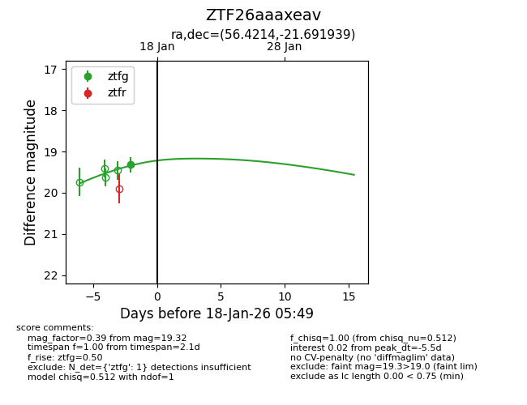
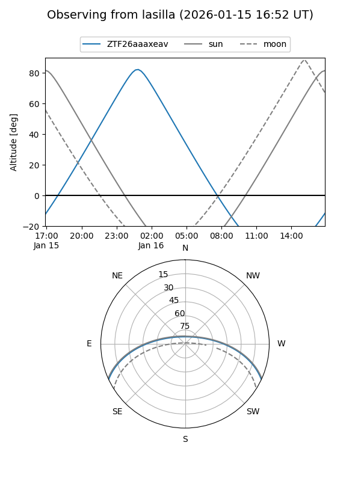
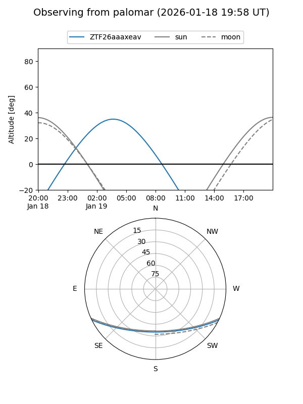
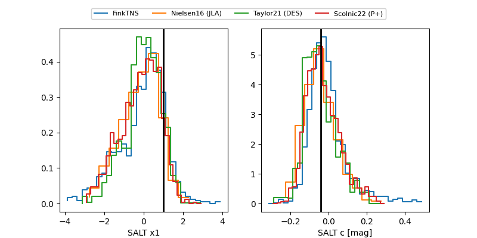

ZTF26aaaxeav
Target ZTF26aaaxeav at 2026-01-18 05:50
Aliases and brokers:
FINK: link
Lasair: link
ALeRCE: link
alt names
ZTF26aaaxeav (ztf,fink_ztf)
Coordinates:
equatorial (ra, dec) = 56.4214,-21.69194
equatorial (HMS+DMS) = 03:45:41.15,-21:41:30.98
galactic (l, b) = (214.8937,-50.15503)
Flags:
Photometry:
last ztfg=19.32
1 ztfg detections
Lightcurve

Visibility


Additional plots
